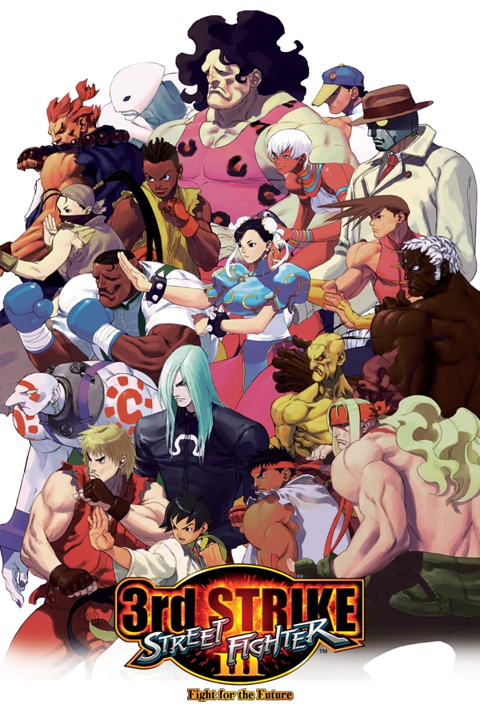

Street Fighter 3
Versões:
New Generation:
Second Impact:
Third Strike:
Informações adicionais

Clique na capa para acessar a wiki de SFIII
Justin Wong VS Daigo Umehara
01/08/2004
Localização Sede da CAPCOM
Voltar para o inicio